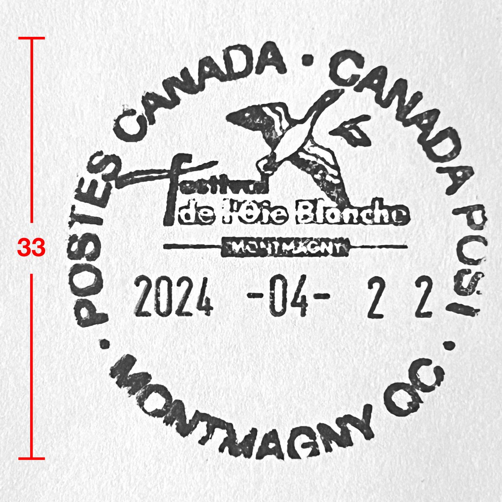

Montmagny Succ Bureau-Chef pictorial cancel
Festival de l'oie blanche · Goose
- Status
- Expired
- Run dates
- 2013-01-01 to 2024-12-31
- Design
- "Festival de l'oie blanche"; Festival of snow goose; snow goose
- Ink colour
- Black
- Designer
- Unknown
- Post office
- Montmagny Succ Bureau-Chef
115 Av. de la Gare
Montmagny, QC
G5V 0A0 - Subjects
- animal, bird, festivity, snow goose
This cancel is retired, so the post office can no longer apply it. Covers with it turn up from dealers and other collectors.
 Montmagny Succ Bureau-ChefGoose 2025
Montmagny Succ Bureau-ChefGoose 2025 Montmagny Succ Bureau-ChefAccordion
Montmagny Succ Bureau-ChefAccordion BP Québec Haute-VillePost office
BP Québec Haute-VillePost office BP Québec Haute-VilleBNAPS 2018
BP Québec Haute-VilleBNAPS 2018 BP Québec Haute-VilleCarnaval
BP Québec Haute-VilleCarnaval